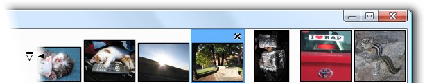

Image List
The image list is displayed in the upper right area of the Paint.NET window. It displays a thumbnail for every image that you have opened, and allows you to switch between them quickly.

To switch to an image, just click on it. You can also use Ctrl + Tab to switch to the next image in the list, or Ctrl + Shift + Tab to switch to the previous one. If there isn't enough room to show all of the open images, a black arrow will show up at either side of the image list. These arrows act as buttons that allow you to scroll left and right. You can also scroll through the image list by placing the mouse cursor in the image list area and then using the mouse wheel.
The white arrow at the left of the list is displayed when at least two images are open, and when clicked it will display a scrollable list of all the images along with their filenames. You can also press Ctrl + Q to open this list.
You can close an image by clicking on it and then clicking on the 'X' that appears in the upper right corner of its thumbnail area. This is a convenient shortcut for the File → Close menu command (you can also use the Ctrl + W or Ctrl + F4 keyboard shortcut).
Copyright © 2007
Rick Brewster, Tom Jackson, and past contributors. Portions Copyright
© 2007 Microsoft Corporation. All Rights
Reserved.